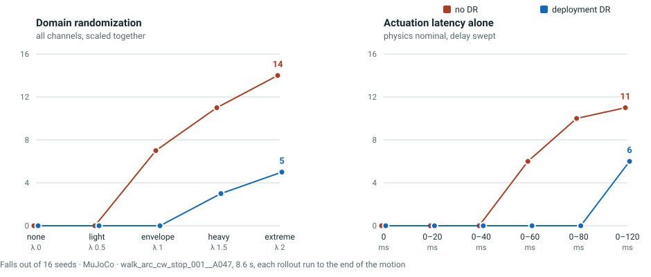

Simulator-to-simulator comparison · SONIC / Unitree G1 · MuJoCo · September 9, 2026
What domain randomization
buys, and what it costs.
Two policies, trained from scratch on the same three motions, the same 8,000 iterations, the same 1,024 environments and the same seed. The only difference between them is the randomization they trained under. One of them stays on its feet when the world moves. Neither demonstrates reliable full-clip path tracking.
Randomization did not make the policy better at the task. It changed which way it fails.
Final-height failures out of 16 at extreme perturbation, without randomization and with it.
Time on the reference path at zero perturbation. Randomization costs path accuracy even when nothing is pushing.
Full-clip tracking by the deployment-DR arm in every evaluated cell. The control has some completions under perturbation.
One training seed. This is a screening comparison, not a superiority test: the measured between-seed effect on absolute capability in this project is 7.8 points. Simulation only; no hardware result.
The two policies
Identical in every respect but one.
Both arms were trained by the same launcher, in one campaign, on the same three adaptation-partition clips (8.1–9.2 s, quiet arms, all inside the hard 10-second episode cap). Upstream's adaptive motion sampler — which reweights practice toward whichever clip is failing — was switched off for both, because on a three-clip pool it is a second curriculum running underneath the experiment, and the two arms would otherwise fail on different clips and train on different effective mixtures.
| Channel | no DR | deployment DR | What it perturbs |
|---|---|---|---|
| rigid-body mass | nominal | λ 1.0 envelope | link masses, wrists and torso |
| centre of mass | nominal | λ 1.0 envelope | torso CoM offset |
| joint default position | nominal | λ 1.0 envelope | per-joint zero offsets |
| physics material | nominal | λ 1.0 envelope | ground friction |
| actuation latency | none | 0–60 ms | delay between action and torque |
| push | none | ±1.5 m/s planar, every 1–3 s | root velocity increment |
The deployment arm is not simply "more randomization everywhere". Its four physics channels sit at the standard envelope; push and actuation-delay ranges were widened beyond the standard physics envelope. That is deliberate: this project's own channel sweep found mass, centre of mass and joint offset nearly free to widen, and friction physically clamped, so a uniform increase would have bought little and confounded the result. Pushing the scalar to 3× on push alone means the treatment is a bundle of physics randomization, push exposure and delay; this A/B cannot isolate the contribution of any single channel.
Realized values read back from the running simulator rather than asserted: the deployment arm held λ 3.0 with an empty physical-clamp list, so the full push envelope was applied; the control held λ 0.0 with all six channels present but collapsed to their nominal points.
How it is measured
What the MuJoCo stage is doing.
The policies were trained in Isaac Lab. The comparison below runs them in MuJoCo, a different physics engine, from an exported single-file ONNX policy. This is the standard simulator-to-simulator check before hardware, and its value is precisely that it shares no code with training: the 1,570-float observation is rebuilt from MuJoCo state and the reference clip, so a wrong term shows up as a broken policy rather than as agreement by construction.
What is randomized
A severity λ scales every channel around its nominal: friction, per-body mass, torso centre of mass, per-joint offsets, pushes and actuation delay. λ 0 is the nominal robot; λ is the MuJoCo evaluation scale. It is not the deployment training envelope, which uses physics 1×, push 3× and delay 1.5×. Transfer also changes the physics implementation. Draws are made from one seeded stream in fixed order, so at a given (λ, seed) both policies face the same seeded exogenous draws in this runner; state-dependent consequences can still differ.
What ends a rollout
A run stops when the pelvis is more than 0.5 m from where the reference motion says it should be. This is the MuJoCo tracking criterion. The Isaac evaluator has additional and different termination terms; sharing a 0.5 m number does not make the criteria equivalent.
Why the video runs past the stopping point. Scoring stops the rollout at 0.5 m of path error, typically around 1.4 seconds. For looking at behaviour that is useless — you get a 1.4-second clip in which nothing has happened yet. Every rollout on this page therefore runs to the end of the 8.6-second motion, with the moment the policy left the path recorded separately. The scored verdict is unchanged by this; only the window you observe is longer.
Demonstration
The same physics, the same pushes, two policies.
Six seeds per condition, shown side by side: no randomization on the left, deployment randomization on the right. Each tile is captioned with what actually happened to that seed. A red border marks a final-height failure. An amber border means it was still upright and walking, but more than half a metre off the path it was supposed to follow.
Statistics
Fewer final-height failures, persistent path drift.
Metric clarification, September 10: “falls” in the existing plots/video means tracking failure plus final pelvis height at or below 60% of reference height. This is an endpoint-height proxy, not an event-based fall detector. A recovered fall can be missed. The Boolean named fell in raw output instead records path departure. These metrics are distinct; neither measures sustained recovery.
Sixteen seeds per cell, on walk_arc_cw_stop_001__A047, each rollout run to the end of the 8.6-second motion. Two different events are counted separately, because collapsing them hides the entire result.

| Randomization | no DR falls | deployment DR falls | no DR on path | deployment DR on path |
|---|---|---|---|---|
| none · λ 0 | 0 / 16 | 0 / 16 | 5.5 s | 1.3 s |
| light · λ 0.5 | 0 / 16 | 0 / 16 | 3.4 s | 1.3 s |
| MuJoCo scale · λ 1 | 7 / 16 | 0 / 16 | 3.1 s | 1.4 s |
| heavy · λ 1.5 | 11 / 16 | 3 / 16 | 2.2 s | 1.4 s |
| extreme · λ 2 | 14 / 16 | 5 / 16 | 1.7 s | 1.5 s |
| Delay envelope | no DR falls | deployment DR falls | no DR on path | deployment DR on path |
|---|---|---|---|---|
| none | 0 / 16 | 0 / 16 | 5.5 s | 1.3 s |
| 0–20 ms | 0 / 16 | 0 / 16 | 6.1 s | 1.3 s |
| 0–40 ms · standard envelope | 0 / 16 | 0 / 16 | 5.2 s | 1.3 s |
| 0–60 ms · deployment arm's ceiling | 6 / 16 | 0 / 16 | 4.2 s | 1.3 s |
| 0–80 ms · held out | 10 / 16 | 0 / 16 | 3.9 s | 1.3 s |
| 0–120 ms · held out | 11 / 16 | 6 / 16 | 2.8 s | 1.3 s |
Reading the tables
- Deployment DR has fewer final-height failures in the harder tested cells. At MuJoCo λ 1 the control is already on the floor in 7 of 16 runs and the deployment policy in none. On latency the deployment policy has zero endpoint-height failures through 0–80 ms, past its own training ceiling, where the control is at 10 of 16.
- It costs path accuracy, and charges even when nothing perturbs it. At λ 0 — the nominal robot, nothing randomized — the control holds the reference path 5.5 s against the deployment policy's 1.3 s.
- Its drift is flat. 1.3 to 1.5 seconds across every perturbation level and every latency level. This near-flat time to first path departure does not establish disturbance-independent robustness.
- The DR policy tracked no full clip. The control tracked 3/16 at mixed λ 0.5, 2/16 at 0–40 ms, 1/16 at 0–60 ms and 1/16 at 0–120 ms. These small counts do not establish reliable tracking.
An earlier version of these tables was wrong, and the correction is instructive. The first counts came from the scored window, which ends a rollout the moment the pelvis passes 0.5 m — often at about 1.4 seconds. A run that has already ended cannot then fall over, so that window undercounted falls badly: 3 of 16 at λ 1.5 against the 11 of 16 above. Both windows are kept in the repository. The tables here are the full-clip window, which is the one that answers whether the robot stays on its feet.
Consequence
Which policy for which environment.
For this one-seed simulation screen, deployment DR reduces terminal-height failures in harder cells while reducing nominal time on path. Neither policy is validated for hardware deployment or reliable path tracking.
Missing path feedback is a plausible contributor that needs a controlled ablation. The deployed observation contains joint angles and velocities, base angular velocity, projected gravity, past actions and the reference motion — and no term at all for where the robot is relative to the path. In a paired-state experiment over 1,536 base states and 6,144 horizontal translations of ±0.25 m, every actor-side observation and every action mean changed by exactly 0.0. The policy cannot see that it has drifted. The tested actor cannot distinguish these translated states. This does not establish that observability alone causes the A/B drift; actuation mismatch, optimization and training quality remain alternative contributors.
A deployment bundle exists for both policies — exported ONNX, a validated 1,570-term observation configuration, joint order and impedance metadata checked against the deployment runner's own source, the three motions converted to the runner's CSV format, and golden observation/action traces for a value-level parity test. What does not exist is any evidence it runs: the vendored C++ runner has never been built or executed in this repository, no exported-versus-simulated action parity has ever been measured, and no hardware safety infrastructure is present.
Scope
What this does not establish.
- One training seed. The measured between-seed effect on absolute capability in this project is 7.8 points, so this is a screening comparison. It is not licensed as a general claim about randomization until it replicates on further seeds.
- One clip, one engine, one robot. All numbers above are a single 8.6-second curved-walk-and-stop motion in MuJoCo. The Isaac-side ladder completed September 9: all 196 final cells exited successfully and have metric files. See the September 10 review.
- The pushes are not physical. They are root velocity increments in metres per second written into simulator state, with no mass, no duration and no contact point, so they name no impulse in newton-seconds and cannot be compared to a physical shove.
- No recovery guarantee. No band, dwell or horizon has been frozen in this project, so no policy has passed or failed a calibrated recovery test. "Fell 0 of 16" is a measurement on one clip, not a safety property.
- The MuJoCo robot is not exactly the trained robot. Its model re-clamps hip pitch and roll to ±88 N·m where training gave those joints 139 N·m, so four high-authority leg joints run at 63% of the training torque ceiling throughout.